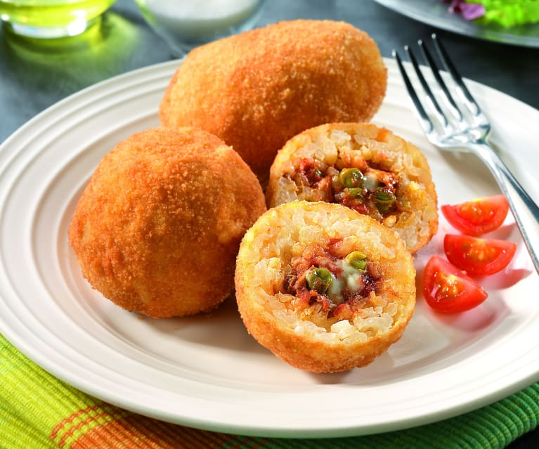

Faites chauffer l'huile d'olive dans une poêle et mettez-y l'oignon à rissoler à feu moyen
Ajoutez la viande et saisissez-la à feu vif avant de verser le coulis de tomates et d'ajouter l'origan
Salez, poivrez et laissez mijoter quelques minutes
Préchauffez le four à 220 °C
Étalez la pâte à pizza et déposez-la sur une plaque allant au four recouverte de papier sulfurisé
Étalez la préparation par-dessus
Parsemez de gruyère
Enfournez durant 15 à 20 min
Lasagne bolognaise
Ingrédients pour 4 personnes
8 Feuilles de pâte à lasagne sans pré-cuisson
233 g Viande de boeuf hachée
50 cl Lait
133 g Gruyère rapé
1,25 Boites de concassée de tomates
1,25 Oignons
33 g Beurre
2,75 cuil. à soupe Farine
2 cuil. à soupe Huile d’olive
0,75 cuil. à soupe Herbes de Provence
Noix de muscade râpée
Sel
Poivre
Préparation
Épluchez et hachez les oignons. Faites chauffer l’huile d’olive dans une casserole et faites-les revenir quelques min. Ajoutez la viande hachée et faites revenir à nouveau jusqu’à ce que la viande soit cuite. Ajoutez ensuite les tomates concassées, les herbes de Provence, du sel et du poivre. Mélangez, couvrez et laissez mijoter environ 30 min en mélangeant de temps en temps
Faites fondre le beurre dans une casserole. Ajoutez la farine, mélangez et laissez cuire 2 min. Versez le lait froid petit à petit tout en délayant à l'aide d'un fouet manuel. Salez, poivrez, ajoutez la noix de muscade et laissez cuire tout en remuant jusqu'à ce que la béchamel soit épaisse
Préchauffez le four à 200 °C
Déposez une couche de pâte à lasagne dans le fond d’un plat à gratin beurré. Versez par-dessus une couche de sauce à la viande. Poursuivez par une couche de béchamel et une couche de gruyère râpé. Renouvelez l'opération 3 ou 4 fois en terminant par le gruyère
Enfournez environ 30 min
Arrancini mozzarella

Ingrédients pour 4 personnes
200g Riz à risotto de type carnaroli
1Boule de mozzarella
10cl Vin blanc sec
4échalotes
50g Parmesan
50cl Bouillon de légumes
2 Oeufs
100g Chapelure
35g Beurre
35g Beurre
2l Huile de friture
Sel
Poivre
Préparation
Otez la première peau de vos échalotes puis émincez-les
Râpez le parmesan
Dans une casserole ou une sauteuse, faites fondre 25g de beurre sur feu moyen/fort. Faites-y revenir les échalotes 2 minutes sans coloration
Ajoutez le riz et nacrez-le en l’enrobant de matière grasse. Remuez sans cesse pendant 3 minutes
Montez le feu, versez le vin blanc, laissez l’alcool s’évaporer puis baisser le feu. Faites cuire votre riz 18 minutes en ajoutant régulièrement du bouillon de légumes chaud
Au bout de ce temps, ajoutez le parmesan et 10g de beurre. Poursuivez la cuisson 3 minutes
Coupez le feu. Ajoutez à votre risotto 2 œufs et mélangez bien l’ensemble. Rectifiez l’assaisonnement si nécessaire. Laissez refroidir à température ambiante puis entreposez au réfrigérateur pendant au moins 2h
Chauffez votre huile de friture à 170 °C. Aidez-vous d’un thermomètre de cuisson
Coupez votre boule de mozzarella en cubes
Mouillez vos mains. Formez des boules de riz en prenant soin d’incérer un cube de mozzarella au centre de chacune
Roulez-les dans la chapelure avant de les faire frire le temps que vos boules aient une belle couleur dorée. Déposez-les sur du papier absorbant pour éliminer l’excédent de gras